Usa
Usa · Oita
Usa
Highlighted on the Oita map.

Sights
Usa Shrine

Sato no Eki Futaba Village

Sen Zai Farm

Innai Myoken Onsen

Karashima Kyoku no Kura (Karashimakoku no Kura)
Ajimu (Ajimu) Chiisa Na Wain Workshop
Toko Tera Gohyaku Rakan
Kyushu Shizen Dobutsu Park Afurikansafari
Ajimu (Ajimu) Budo Sake Workshop
akagera
Ryota no Tebasaki
Dairaku (Dairaku) Tera
Oitaken History Museum Fudoki no Oka
Honke Katsu Takara Ajimu Tei
Gaku Setsu (Takkiri) Gorge Campground
Takasu (Takasu) Suspension Bridge Park
Innai Yo (Amari) Onsen
Mahoroba Onsen Usagi Kyo (Usa)
Sato no Eki Sho no Iwa no Sho
Fuku Gen Tera Enma Hora (Fukugonjienmado)
Fukuki no (Fuki no) Falls
Roadside Station Innai
Higashi Shii Ya Falls (Higashishiiya no Taki)
Nishi Shii Ya (Nishishiiya) no Oicho
Shochu Seishu
Shika Arashi (Kanarase) Yama
Keisho Tera Jigoku Gokuraku
Usa Heisei Reiwa no Mori Supotsu Park
Usa no Machupichu
Usa Karage
Innai Town Ishibashi Gun
Innai Yuzu
Wainariiresutoran Asagiri no Sho
Suppon Ryori
Ju Hozan Daijo In Oni no Miira
Itsumi (Henmi) Tei Garden
Hyaku Karada Sha (Hyakutaisha) Kyo Kubi (Kyoshu) Tsuka Burial Mound
Mitsuoka Castle Ruins
Kosaka (Osaka) Fudo Mikoto
Sen no Iwa
Sada Kyo Ishi (Sadakyoishi)
Naramoto (Naramoto) Magai Hotoke
Kaori Shita (Koshita) Dam Suspension Bridge
Ryo Go (Ryoai) Tanada
Yo (Amari) Falls
Nishimoto Gan Tera Yokka City Betsuin
Higashimoto Gan Tera Yokka City Betsuin
Ryugan Tera
Shiroi Ichigo Entai Hori Shiseki Park
Ajimu (Ajimu) Kote Gun
Usa Heiwa Museum
Kanaya Onsen
Tsubusa (Tsubusa) Onsen (Tsubusa Rojin Kei no Ie)
Fukami Onsen (Fukami Rojin Ikoi no Ie)
Ajimu Onsen Center
Sada Onsen (Sada Rojin Kei no Ie)
Kazokuryoko Village (Ajimu (Ajimu))
Buzen Shibahara Zenkoji
Shimizu (Seisui) Tera
Dai Zen (Daizen) Tera
Gokuraku Tera
Omoto (Omoto) Shrine
Nanko Tera Nio Zo
Gan Shiru
Yama Kura no Ichiigashi
Yokaro Park Campground
Usa Yakusho
Dining
本場インド料理 ルパ 宇佐店
Honba Indo Ryouri Rupa Usa Mise
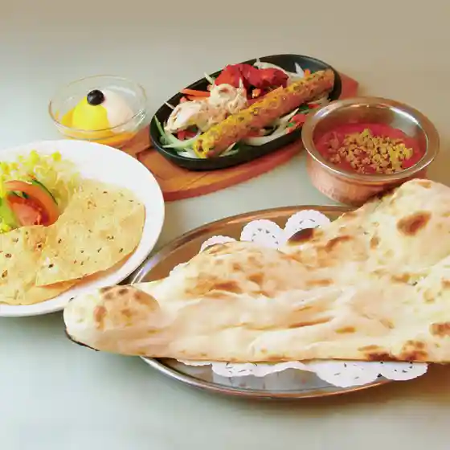
しゃぶしゃぶ温野菜 大分安心院店
Shabushabu Onyasai Ooita Ajimu Mise

たこ焼から揚げ専門店 まんらい
Tako Yaka Ra Age Senmonten Manrai

よつ屋手打ちうどん
Yotsu Ya Teuchi Chiudon
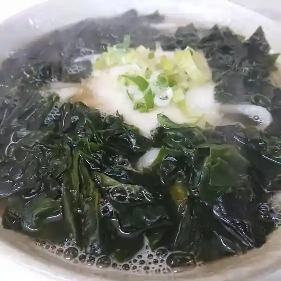
アカゲラ
Akagera
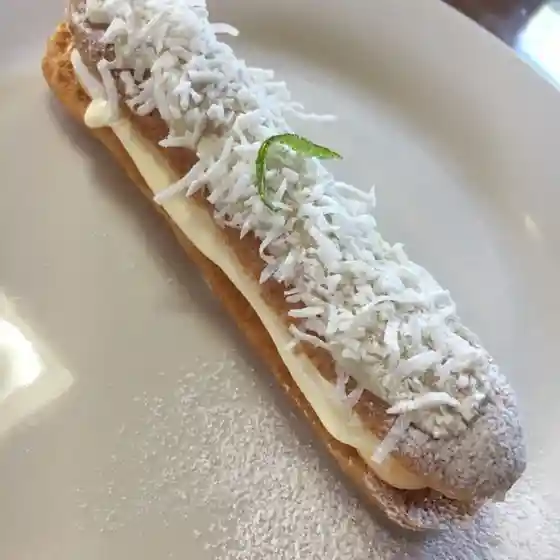
納豆工房 大きな豆の木
Nattou Koubou Ooki Na Mame No Ki
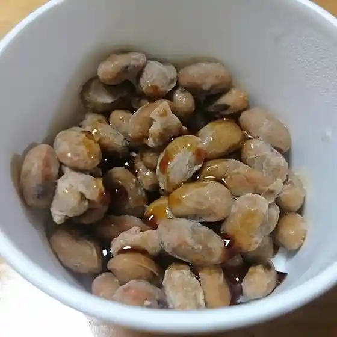
ねぎ屋さんのねぎ焼き 宇佐神宮店
Negi Ya Sannonegi Yaki Usa Jinguu Mise
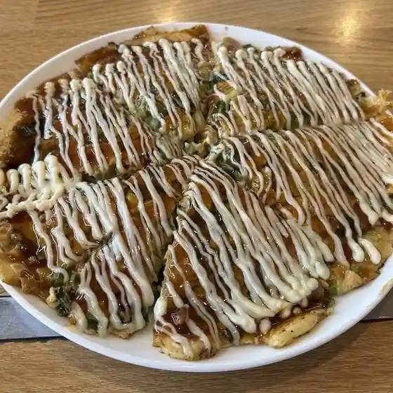
萬蔵
Manzou
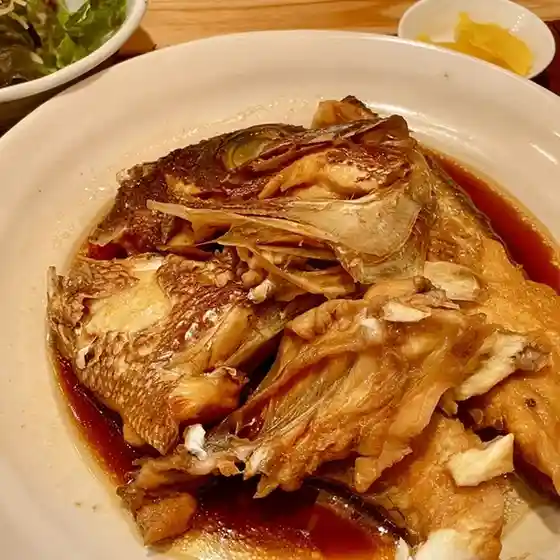
天婦羅 たか
Tenpura Taka
梅田家
Umeda Ie
大分辛麺 くうかい
Ooita Shin Men Kuukai
上野水産
Ueno Suisan
ブレッドハウス 四日市店
Bureddohausu Yokkaichi Mise
鉄板バル 葱屋 四日市店
Teppan Baru Negi Ya Yokkaichi Mise
お菓子の菊家 宇佐店
O Kashi No Kiku Ie Usa Mise
アウトショップ
Autoshoppu
BERSULE
Bersule
井口屋
Inokuchi Ya
三林亭
Mitsubayashi Tei
喫茶蓮華
Kissa Renge
是恒商店
Kore Tsune Shouten
豊いちうどん 宇佐店
Yutaka Ichiudon Usa Mise
BAKE STAND
Bake Stand
ハッピーアベリー
Happiiaberii
Pit Cafe USA
Pit Cafe Usa
米沢観光園
Yonezawa Kankou Sono
焼肉 力
Yakiniku Chikara
本陣
Honjin
B & B レストラン ムジカ
B &Amp; B Resutoran Mujika
ウサノメグミ 空海
Usanomegumi Kuukai
堀菓子舗
Hori Kashi Ho
よっちゃん食堂
Yotchan Shokudou
フレンチカフェ キッチン101
Furenchikafe Kitchin 101
からあげ ちえみ
Karaage Chiemi
富士屋
Fujiya
八重
Yae
宇佐からあげ おくだ
Usa Karaage Okuda
居酒屋 ペゴッパ
Izakaya Pegoppa
喫茶ママ
Kissa Mama
樹豆珈琲
Ki Mame Koohii
万福
Banpuku
苺の丘
Ichigo No Oka
ホーントハッシュ
Hoontohasshu
ナナンカフェ
Nanankafe
ひるめし屋なみ
Hirumeshi Ya Nami
アジムひの木卵
Ajimu Hino Ki Tamago
マサ精肉店
Masa Seinikuten
清月堂
Seigetsu Dou
ベーカリー パティオ
Beekarii Pateio
長崎ちゃんぽん壱番亭
Nagasaki Chanpon Ichiban Tei
LAWSON 安心院店
Lawson Ajimu Mise
コート ア コート
Kooto A Kooto
林んち
Hayashi Nchi
中国庶民料理 珉
Chuugoku Shomin Ryouri
池田鮮魚店
Ikeda Sengyoten
マルミヤストア 安心院店
Marumiyasutoa Ajimu Mise
焼肉味楽園
Yakiniku Aji Rakuen
寿
Hisashi
こしき
Koshiki
Bar Flower
Bar Flower
Torian Honten Usa Oita Prefecture Kyushu
Torian Honten Usa Oita Prefecture Kyushu
Torian Honten Usa Oita Prefecture Kyushu
Torian Honten Usa Oita Prefecture Kyushu
Torian Honten Usa Oita Prefecture Kyushu
Torian Honten Usa Oita Prefecture Kyushu
Torian Honten Usa Oita Prefecture Kyushu
Torian Honten Usa Oita Prefecture Kyushu
Negiyahompo Jingu Usa Oita Prefecture Kyushu
Negiyahompo Jingu Usa Oita Prefecture Kyushu
Negiyahompo Jingu Usa Oita Prefecture Kyushu
Negiyahompo Jingu Usa Oita Prefecture Kyushu
Negiyahompo Jingu Usa Oita Prefecture Kyushu
Negiyahompo Jingu Usa Oita Prefecture Kyushu
Negiyahompo Jingu Usa Oita Prefecture Kyushu
Negiyahompo Jingu Usa Oita Prefecture Kyushu
Rairaiken Usa Oita Prefecture Kyushu
Rairaiken Usa Oita Prefecture Kyushu
Rairaiken Usa Oita Prefecture Kyushu
Rairaiken Usa Oita Prefecture Kyushu
Rairaiken Usa Oita Prefecture Kyushu
Rairaiken Usa Oita Prefecture Kyushu
Rairaiken Usa Oita Prefecture Kyushu
Rairaiken Usa Oita Prefecture Kyushu
Sato No Ekionoiwanosho Usa Oita Prefecture Kyushu
Sato No Ekionoiwanosho Usa Oita Prefecture Kyushu
Sato No Ekionoiwanosho Usa Oita Prefecture Kyushu
Sato No Ekionoiwanosho Usa Oita Prefecture Kyushu
Sato No Ekionoiwanosho Usa Oita Prefecture Kyushu
Sato No Ekionoiwanosho Usa Oita Prefecture Kyushu
Sato No Ekionoiwanosho Usa Oita Prefecture Kyushu
Sato No Ekionoiwanosho Usa Oita Prefecture Kyushu
Kankokan Bumpuku Usa Oita Prefecture Kyushu
Kankokan Bumpuku Usa Oita Prefecture Kyushu
Kankokan Bumpuku Usa Oita Prefecture Kyushu
Kankokan Bumpuku Usa Oita Prefecture Kyushu
Kankokan Bumpuku Usa Oita Prefecture Kyushu
Kankokan Bumpuku Usa Oita Prefecture Kyushu
Kankokan Bumpuku Usa Oita Prefecture Kyushu
Kankokan Bumpuku Usa Oita Prefecture Kyushu
Ajimu Winery Restaurant Asaguiri No Sho Usa Oita Prefecture Kyushu
Ajimu Winery Restaurant Asaguiri No Sho Usa Oita Prefecture Kyushu
Ajimu Winery Restaurant Asaguiri No Sho Usa Oita Prefecture Kyushu
Ajimu Winery Restaurant Asaguiri No Sho Usa Oita Prefecture Kyushu
Ajimu Winery Restaurant Asaguiri No Sho Usa Oita Prefecture Kyushu
Ajimu Winery Restaurant Asaguiri No Sho Usa Oita Prefecture Kyushu
Ajimu Winery Restaurant Asaguiri No Sho Usa Oita Prefecture Kyushu
Ajimu Winery Restaurant Asaguiri No Sho Usa Oita Prefecture Kyushu
Kappo Koshita Ryokan Usa Oita Prefecture Kyushu
Kappo Koshita Ryokan Usa Oita Prefecture Kyushu
Kappo Koshita Ryokan Usa Oita Prefecture Kyushu
Kappo Koshita Ryokan Usa Oita Prefecture Kyushu
Kappo Koshita Ryokan Usa Oita Prefecture Kyushu
Kappo Koshita Ryokan Usa Oita Prefecture Kyushu
Kappo Koshita Ryokan Usa Oita Prefecture Kyushu
Kappo Koshita Ryokan Usa Oita Prefecture Kyushu
Togeno Curry Pokara Usa Oita Prefecture Kyushu
Togeno Curry Pokara Usa Oita Prefecture Kyushu
Togeno Curry Pokara Usa Oita Prefecture Kyushu
Togeno Curry Pokara Usa Oita Prefecture Kyushu
Kankokan Bumpuku Usa Oita Prefecture Kyushu
Kankokan Bumpuku Usa Oita Prefecture Kyushu
Kankokan Bumpuku Usa Oita Prefecture Kyushu
Kankokan Bumpuku Usa Oita Prefecture Kyushu
Yo chan Ramen Usa Oita Prefecture Kyushu
Yo chan Ramen Usa Oita Prefecture Kyushu
Yo chan Ramen Usa Oita Prefecture Kyushu
Yo chan Ramen Usa Oita Prefecture Kyushu
Shioya Usa Oita Prefecture Kyushu
Shioya Usa Oita Prefecture Kyushu
Shioya Usa Oita Prefecture Kyushu
Shioya Usa Oita Prefecture Kyushu
Genroku Udon Usaten Usa Oita Prefecture Kyushu
Genroku Udon Usaten Usa Oita Prefecture Kyushu
Genroku Udon Usaten Usa Oita Prefecture Kyushu
Genroku Udon Usaten Usa Oita Prefecture Kyushu
Ajimu Winery Restaurant Asaguiri No Sho Usa Oita Prefecture Kyushu
Ajimu Winery Restaurant Asaguiri No Sho Usa Oita Prefecture Kyushu
Ajimu Winery Restaurant Asaguiri No Sho Usa Oita Prefecture Kyushu
Ajimu Winery Restaurant Asaguiri No Sho Usa Oita Prefecture Kyushu
Stay
宇佐ホテルリバーサイド
Usa Hoteruribaasaido
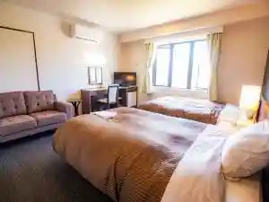
ホテルパブリック21 夕食＆朝食が無料サービス！
Hoterupaburikku 21 Yuushoku & Choushoku Ga Muryou Saabisu !
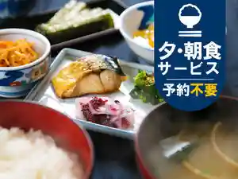
宇佐グランドホテル
Usa Gurandohoteru
HOTEL MEGURI
Hotel Meguri
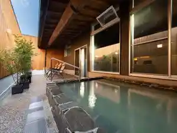
HOTEL R9 The Yard 宇佐
Hotel R9 The Yard Usa
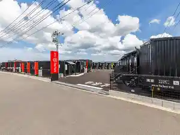
グッドステイ みずほ
Guddosutei Mizuho
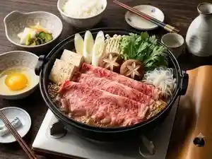
HOTEL AZ 大分安心院店
Hotel Az Ooita Ajimu Mise
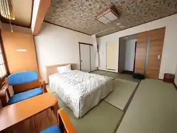
料亭やまさ旅館
Ryoutei Yamasa Ryokan
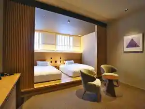
古民家BASE・龍王 別邸龍王の道
Ko Minka Base ・ Ryuuou Bettei Ryuuou No Michi
古民家ＢＡＳＥ・龍王
Ko Minka B A S E ・ Ryuuou
田宮
Tamiya